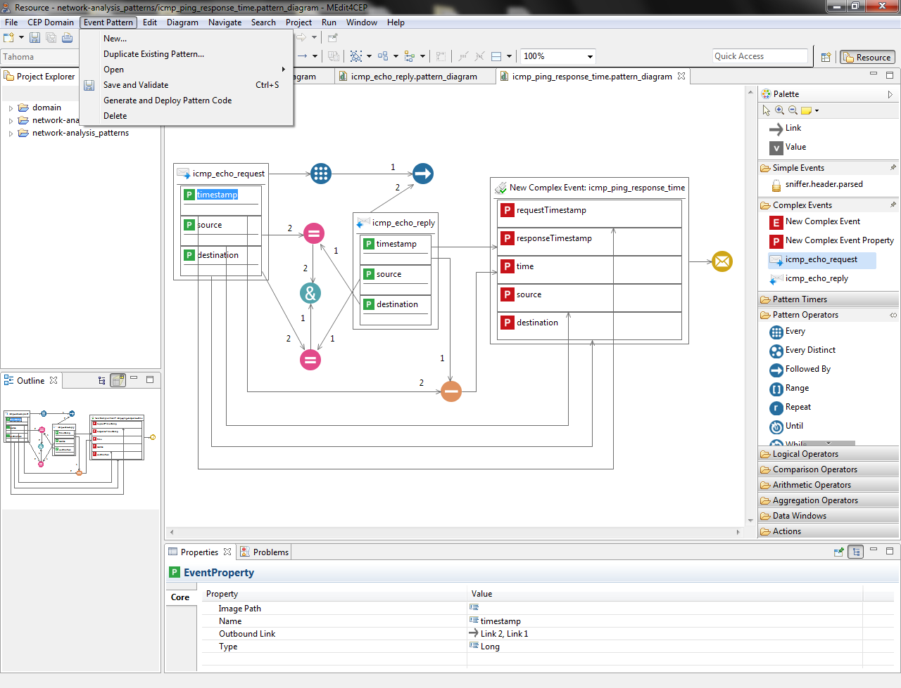

In this section, we describe our graphical editor that supports the modeling of event patterns –the situations to be detected in a particular domain and the actions to be notified to interested users by email or social networking services, among others–. This editor has been implemented using GMF and Epsilon.
Thanks to this editor, users will be able to address the execution of steps 3, 4 and 5, essential for defining patterns in an intuitive way, according to our model-driven approach. Thereby, the editor would provide any user with the description of situations and actions for a domain without knowledge of any concrete EPL or language for implementing actions. Additionally, the editor enables the validation and storage of pattern models, their exportation and importation in order to share them with other users, as well as their transformation into both pattern code to be added to a CEP engine and action code to be deployed into an ESB.
The figure below shows the built editor for event pattern definition. This editor has the same four parts as the CEP domain editor: a tool palette, a canvas, a menu and a property view.
The editor palette has 41 tools for designing event patterns, as depicted in the table below. This palette can be dynamically reconfigured from different CEP domain models, enabling users to enjoy a graphical interface adapted to the specific context required.
Specifically, the Simple Events category is customized with all event types provided by a modeled CEP domain whereas Complex Events is customized with the complex event types defined when designing event patterns for a particular domain. As with the CEP domain editor, this editor allows users to substitute icons with one another and ensures that the tool palette is used correctly. Since the complex event type defined in an event pattern model is automatically incorporated in the palette as a tool in order to reuse it in other pattern models, it will be possible to create an event pattern hierarchy, i.e. a pattern depending on others.
| Category | Name | Description | Notation |
|---|---|---|---|
| Link | It defines the graphical representation of one or more relationships between operands and operators. | ||
| Value | It defines a Boolean, Integer, Long, Double, Float or String value. | ||
| Simple Events | Event | It describes an event type for a concrete CEP domain. | |
| EventProperty | It describes a feature of an event. Nested properties are supported. | |
|
| Complex Events | ComplexEvent | It describes the complex event type to be created upon pattern detection. | |
| ComplexEvent Property | It describes a feature of a complex event. Nested properties are supported. | ||
| Pattern Timers | TimerInterval | It waits for the specified time period (years, months, weeks, days, hours, minutes, seconds and milliseconds) before turning to true. | |
| TimerSchedule | It turns into true at a defined time (dayOfWeek, dayOfMonth, month, hour, minute, second). | ||
| WithinTimer | It is permanently evaluated to false if the contained pattern expression does not turn to true during the specified time period (years, months, weeks, days, hours, minutes, seconds and milliseconds). | |
|
| Pattern Operators | Every | It selects every event belonging to the specified type. | |
| EveryDistinct | It is similar to Every, but eliminates duplicated results according to a given distinct-value expression. | ||
| FollowedBy | It determines a pattern expression that must be followed by another. | ||
| Range | It specifies the minimum (lowEndpoint) and maximum (highEndpoint) number of times a pattern expression must occur. | ||
| Repeat | It defines how many times (count) a pattern expression must occur. | ||
| Until | It checks a pattern expression until the condition (another pattern expression) is evaluated to true. | ||
| While | It checks a pattern expression while the condition (another pattern expression) is evaluated to true. | ||
| Logical Operators | And | It returns a true value only if all operands are true. | |
| Or | It returns a true value if at least one operand is true. | ||
| Not | It returns a true value if the operand is false, and a false value if the operand is true. | ||
| Comparison Operators | Equal | It returns a true value if operand1 = operand2. | |
| GreaterEqual | It returns a true value if operand1 ≥ operand2. | ||
| GreaterThan | It returns a true value if operand1 > operand2. | ||
| LessEqual | It returns a true value if operand1 ≤ operand2. | ||
| NotEqual | It returns a true value if operand1 ≠ operand2. | ||
| Arithmetic Operators | Addition | It adds two numeric values. | |
| Division | It divides one numeric value by another. | ||
| Modulus | It returns the remainder of dividing one numeric value by another. | ||
| Multiplication | It multiplies two numeric values. | ||
| Subtraction | It subtracts one numeric value from another. | ||
| Aggregation Operators | Avg | It returns the average of the values in an expression. | |
| Count | It returns the number of values in an expression. | ||
| Max | It returns the highest value in an expression. | ||
| Min | It returns the lowest value in an expression. | ||
| Sum | It adds the values in an expression. | ||
| Data Windows | Batching EventInterval | Tumbling window up to the specified number of events (size). | |
| Batching TimeInterval | Tumbling window that batches events and releases them every specified time period (years, months, weeks, days, hours, minutes, seconds, milliseconds). | |
|
| Sliding EventInterval | Sliding window by the specified number of events (size). | ||
| Sliding TimeInterval | Sliding window by the specified time period (years, months, weeks, days, hours, minutes, seconds, milliseconds). | ||
| Actions | It indicates an email must be sent with the complex event created when detecting its corresponding event pattern. | ||
| It indicates a message must be sent to a Twitter account with the complex event created when detecting its corresponding event pattern. |
The editor's menu bar is available in any Eclipse application. In addition to menus by default, a CEP Domain menu of the domain editor has been added along with a new menu called Event Pattern:
By integrating the CEP domain editor with the event pattern editor, users are provided with all functionalities in a single editor. In addition to Import CEP Domain and Export CEP Domain, two more options have been added to the File menu:
We would like to point out that, in the current version of this editor, transformation rules have been created to automatically transform pattern models into Esper EPL and XML action code. It is important to highlight that our editor can be extended to support other languages since it allows modeling patterns regardless of the language finally used for their implementation. To this end, new transformation rules per EPL or language for implementing actions which is to be incorporated in the editor, in order to transform pattern models to this new language, must be created.